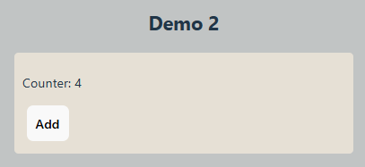
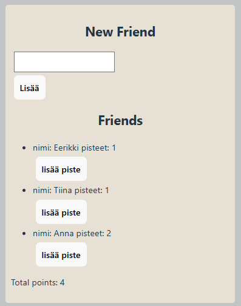

React-demoja
Demo 2
Tämä demo käy läpi Full Stack open-kurssin osan 1 kohdan Komponentin tila ja tapahtumankäsittely.
Tilamuuttuja
Tila (state) on Reactin ominaisuus jolla voidaan määritellä komponentin eliaikana päivittyvä tieto. Tilamuuttujalla on kaksi alkota joista ensimmäinen on muuttuja ja toinen funktio jolla muuttujaa voidaan päivittää.
Lisää demot-projektissa components-kansioon uusi tiedosto Counter.jsx.
useState-funktio tulee importata tiedoston alussa:
import { useState } from 'react'
Tilamuuttuja(t) määritellään komponentin alussa. Tilamuuttujan alkuarvo määrittää muuttujan tyypin (esimerkiksi 0, "", false, []).
import { useState } from "react";
const Counter = () => {
const [counter, setCounter] = useState(0);
return (
<div>
<p>Counter: {counter}</p>
</div>
)
}
export default Counter;
Nyt alkuarvo tulostuu sivulle. Kun halutaan päivittää muuttujaa counter meidän tulee kutsua setCounter-funktiota. Tehdään painike joka kasvattaa muuttujaa:
<button onClick={() => setCounter(counter + 1)}>Add</button>

Kokeile lisätä painike muuttujan arvon vähentämistä ja nollausta varten.
Ehdollinen renderöinti
Tilan avulla voidaan helposti hallita käyttöliittymää piilottamalla ja näyttämällä komponentti tai div-elementti tilamuuttujan mukaisesti.
Lisää demot-projektissa App.jsx-tiedostolle tilamuuttuja showPets.
function App() {
const [showPets, setShowPets] = useState(false);
Lisätään koodia Pets-komponentin ympärille. Jos showPets on true niin näytetään Pets-komponentti:
{showPets && <Pets pets={pets} />}
Kokeile toimintaa. Lisää tämän jälkeen painike jolla voidaan muuttaa tilamuuttujan boolean-arvo päinvastaiseksi.
<button onClick={()=>setShowPets(!showPets)}>Show Pets</button>
Olisi näppärää jos teksti vaihtuisi myös. Voit kirjoittaa Show Pets-tekstin tilalle lyhyen ehtolauseen joka hyödyntää tilamuuttujaa:
{showPets ? "Hide Pets" : "Show Pets"}
Friends
Seuraavaksi kokeillaan muuttujan lisäämistä taulukkoon. Lisää components-kansioon Friends.jsx-tiedosto.
const Friends = () => {
const [name, setName] = useState("");
return (
<div>
<h2>New Friend</h2>
<form action="" >
<input type="text" value={name} onChange={e => setName(e.target.value)} />
<button type="submit">Lisää</button>
</form>
</div>
)
}
export default Friends;
Lomakkeella syötetty nimi tallennetaan name-tilamuuttujaan. Lisää App.jsx-tiedostossa Friends-komponentti:
<Friends />
Kaveri on tarkoitus lisätä taulukkoon joten tälle tarvitaan Friends-komponentille (Friends.jsx) oma tilamuuttuja:
const [friends, setFriends] = useState([]);
Lomake kutsuu submitHandler-funktiota jossa uusi nimi lisätään concat-funktiolla friends-taulukon jatkeeksi.
const submitHandler = (e, name) => {
e.preventDefault();
setFriends(friends.concat(name))
console.log(friends);
setName("");
}
Lisää lomakkeelle kutsu funktiolle:
<form action="" onSubmit={e => submitHandler(e, name)} >
FriendsList
Taulukon tulostaminen tehdään omaan Komponenttiin FriendsList. Lisää tämä komponentti Friends.jsx-tiedostoon, et tarvitse sitä App.jsx-tiedostolla joten sen exportointi ei ole tarpeen.
const FriendsList = ({friends}) => {
return (
<ul>
{friends.map((f,i) => <li key={i}>{f} </li>)}
</ul>
)
}
FriendsList saa parametrina taulukon. Lisää Friends-komponentille listan näyttäminen mukaan:
<h2>Friends</h2>
<FriendsList friends={friends} />
Olioiden käsittely
Tehdään friends-taulukon sisältämistä tiedoista hieman monimutkaisempia. Taulukko sisältäisi olioita joilla on nimi, id ja pisteet. Kun ystävä listään tälle arvotaan id.
setFriends(friends.concat({name: name, points: 0, id: Math.floor(Math.random()*1000000)}));
FriendsList-komponentilla näytetään olion tiedot mapin sisällä:
<li key={f.id}>nimi: {f.name} pisteet: {f.points}
Pisteen lisäämistä varten tarvitaan funktio addPoint. Tilamuuttujaa ei voi muuttaa vaan se täytyy korvata uudella taulukolla. Tästä syystä tehdään aputaulukko tempFriends jossa oikealla id:llä oleva ystävä päivitetään. Lisää addPoint-funktio Friends-komponentille.
const addPoint = (e, id) => {
e.preventDefault();
const tempFriends = friends.map(f => {
if(id === f.id)
f = {...f, points: f.points + 1}
return f
})
setFriends(tempFriends)
}
Pisteen lisäämien tapahtuu FriendsList-komponentilla. Viedään addPoint toiselle komponentille:
<FriendsList friends={friends} addPoint={addPoint}/>
Jotta FriendsList osaa käyttää sitä täytyy funktio tuoda mukaan:
const FriendsList = ({friends, addPoint}) => {
Lisää vielä painike li-elementin sisälle:
<button onClick={e=>addPoint(e, f.id)}>lisää piste</button>
Reduce
Friends-komponentilla voidaan näyttää kokonaispisteet reduce-funktion avulla. Tehdään aputaulukko points ja lasketaan siitä kokonaispisteet reduce-funktiolla:
const points = friends.map(f => f.points) const totalPoints = points.reduce((a, b) => a + b, 0)
Näytä return-osassa totalPoints
<p>Total points: {totalPoints}</p>
